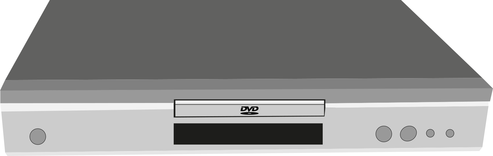
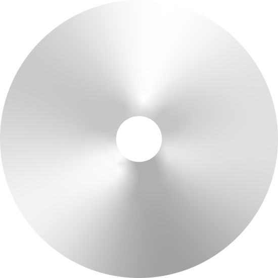

Van alle genres thuis!
Mijn onderwerp heeft te maken met films. Het gaan dan over elke soort genre: Sport, Muziek, Romcoms, Superhelden, Oorlog, Historie, Drama & Animaties. Alles komt erin voor! Het liefst een gemixte samenherende cohesie met een onverwachte mix (en matches). Van alles waarvan je denkt dat niet onder één lijst gezet kan worden toch mogelijk is. En mijn inspiratie voor dit idee komt ook uit een film: "Spider-Man: Across The Spider-Verse". in de film zie je heel veel verschillende animatie styles die samen komen tot 1 mooie gecomposeerde film.

